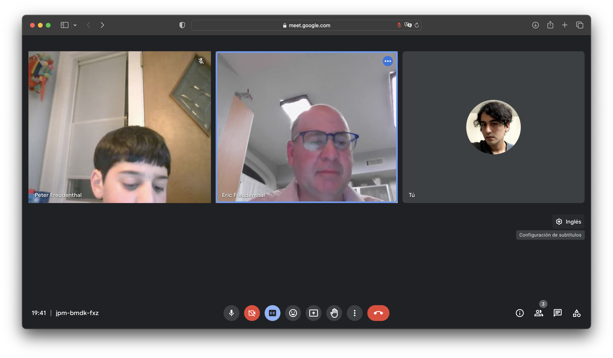
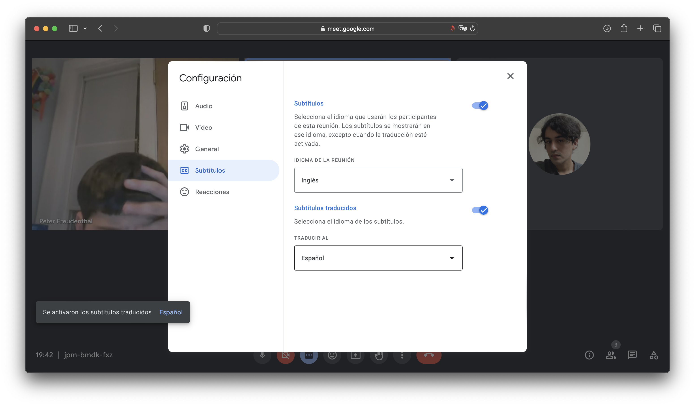

Una vez que presione el link para entrar a la reunion, presione el botón
Esto lo llevara a la pantalla de la reunion virtual. Al fondo de la pantalla aparecera una hilera de botones.
Para activar los subtítulos, presione el tercer botón de la izquierda con el icono
.
Coloque el cursor en la parte derecha de la pantalla hasta que aparezca un botón indicando el idioma de la junta. Presione el botón.

La pantalla de configuración del idioma aparecerá. Confirme que el a la derecha de la seccion
para activar la traducción en tiempo real.
Una vez que la traduccion en tiempo real este activada, puede seleccionar el idioma de los subtítulos que aparecerán en la pantalla. Si el español no esta seleccionado, puede elegirlo entre las opciones.

Una vez hecho esto, puede presionar el botón